Обновлено 07.10 в 13:30 по Корее. Часы работы: Kakao Map 07.10. Такси: Naver Maps 07.10 13:20 (обычный трафик). Погода AccuWeather 07.10: ср и чт солнце 25°, без дождя; пт днём облачно с прояснениями, ночью гроза. Канатка: её сайт 07.10. Фото: Wikimedia Commons. Отель: Fairfield Songdo, 113 Songdohaebyeon-ro (для такси 부산 서구 송도해변로 113), +82 51 260 0000.
среда четверг отель. Google Maps в Корее строит только транспорт, для такси жми Naver.
Ср 07.10 · сегодня: две деревни, канатка на закат
План на сегодня с ~13:45. Gamcheon 14:00-15:15 → такси 17 мин → Huinnyeoul 15:35-16:45 → такси 11 мин → канатка ~17:00, закат 18:00 на мысе → обратно → ужин на рынке Jagalchi (до 22:00) или у отеля → после 20:00 пройтись по Cloud Trail в подсветке. Gamcheon и Huinnyeoul - не рядом: это два разных района по разные стороны порта, между ними 6,4 км, только на такси.
Что увидишь: склон горы, весь застроенный маленькими разноцветными домами террасами. Узкие переулки и лестницы, роспись на стенах, арт-объекты, смотровые площадки, с верхней улицы видно море.
Объекты и инфоцентр 09:00-18:00 (Kakao, 07.10). Сама деревня - жилой квартал, ходить можно свободно, бесплатно. Нужно 1-1,5 часа. Идёшь по верхней главной улице, на смотровые сворачиваешь вниз.
🚕 Gamcheon → Huinnyeoul: 6,4 км, 17 мин, ~8 200 ₩. Таксисту: 흰여울문화마을. Через мост на остров Yeongdo
2
Huinnyeoul Culture Village (Yeongdo)
흰여울문화마을 · обрыв над морем
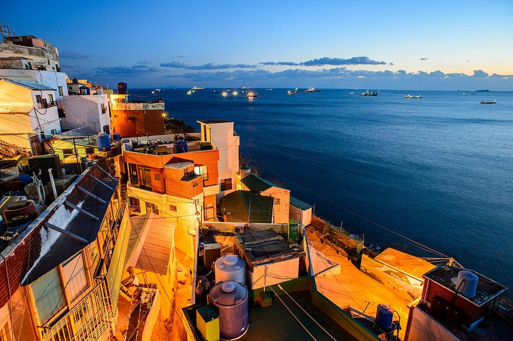
Белые домики на краю обрыва, вечер
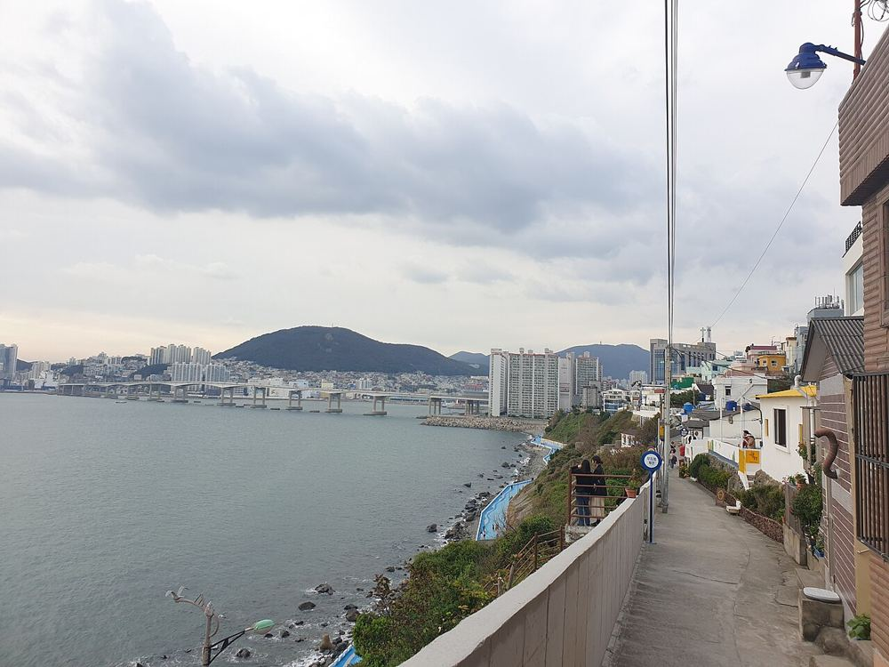
Дорожка вдоль обрыва с видом на залив
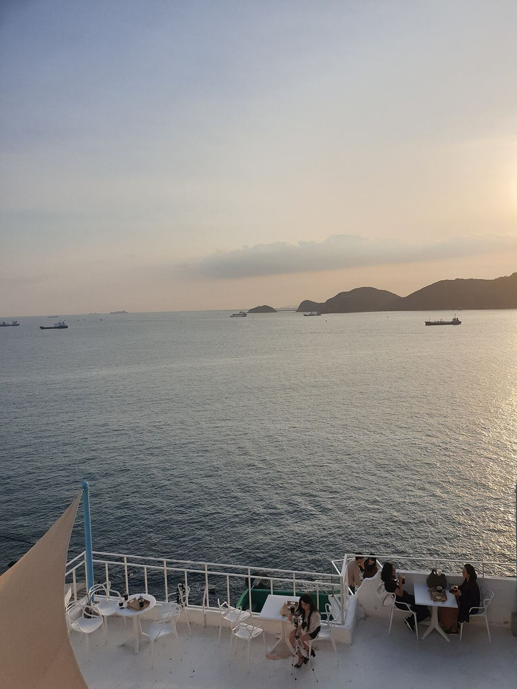
Кафе с террасой над морем
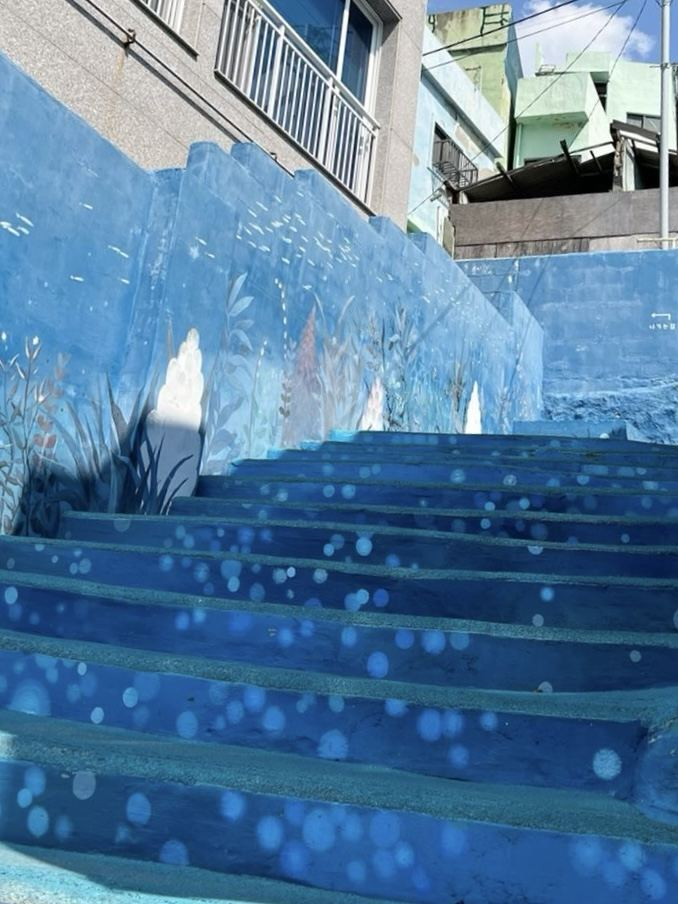
Расписанная лестница
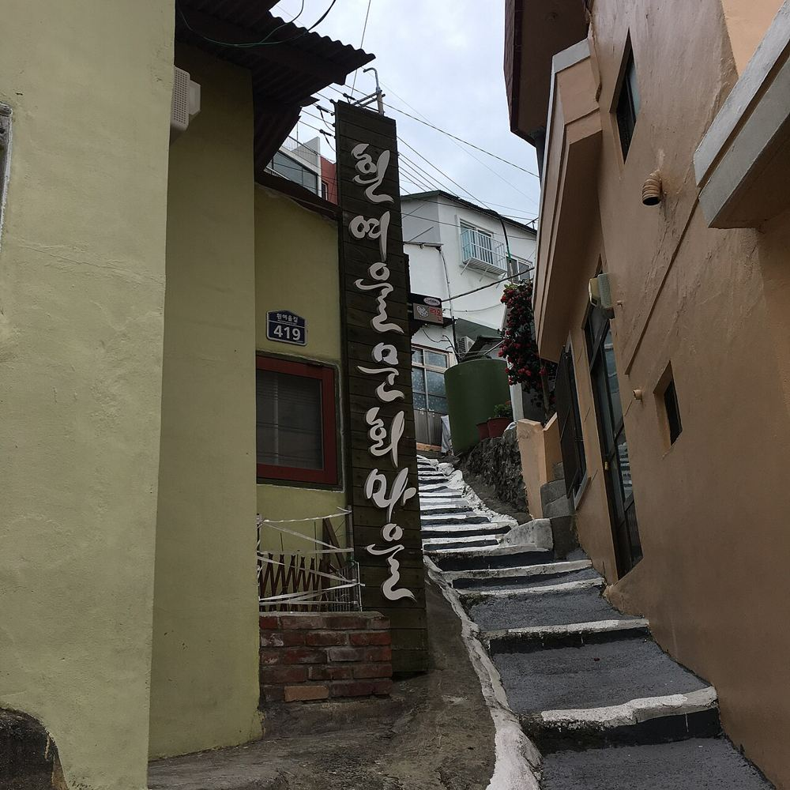
Узкие лестницы между домами
← листай фото →
Что увидишь: белые домики прямо на краю обрыва над морем, узкие лестницы между ними, кафе с террасами над водой. Внизу под обрывом идёт дорожка вдоль моря, рядом короткий туннель в скале 흰여울 해안터널 (~640 м от деревни). Спокойнее и тише, чем Gamcheon.
Объекты 10:00-18:00 (Kakao, 07.10), деревня и дорожка бесплатно. Нужно около часа.
🚕 Huinnyeoul → канатка: 4,6 км, 11 мин, ~6 700 ₩. Таксисту: 송도해상케이블카 (станция у пляжа Songdo, 8 мин пешком от отеля)
3
Канатка Busan Air Cruise
송도해상케이블카 · закат 18:00
Кабинки над заливом SongdoКабинки идут над Cloud Trail и скалойЗалив, мыс Amnam и канатка
← листай фото →
Что увидишь: кабинки над заливом от пляжа Songdo до мыса Amnam, высота до 86 м. В Crystal-кабинке прозрачный пол. На мысе (станция Songdo Sky Park): смотровые террасы, Ocean Terrace на закат, фото-объекты для семей, бесплатный музей канатки. Главное - сама поездка и вид, на мысе хватит 30-40 минут.
Сегодня 09:00-21:00, билеты до 20:30 (сайт канатки, 07.10). Обычная туда-обратно 19 000 ₩ (в одну сторону 15 000), Crystal 24 000 ₩ (в одну сторону 19 000). Подвесной мост Yonggung у верхней станции работает до 17:30 (Kakao) - к закату, скорее всего, уже закрыт.
🚕 Канатка → рынок Jagalchi: 3 км, 9 мин, ~6 000 ₩. Таксисту: 자갈치시장
4
Рынок Jagalchi
자갈치시장 · ужин
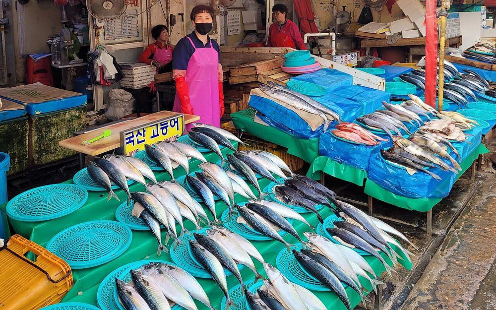
Ряды с рыбой
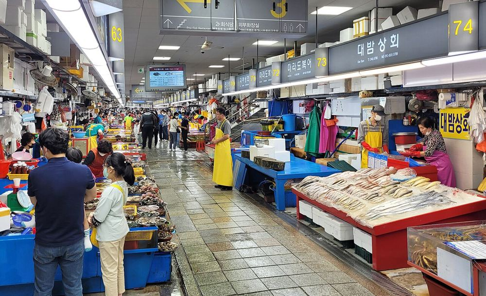
Крытый зал рынка
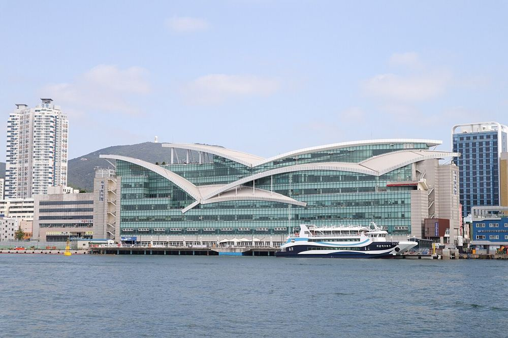
Здание рынка со стороны моря
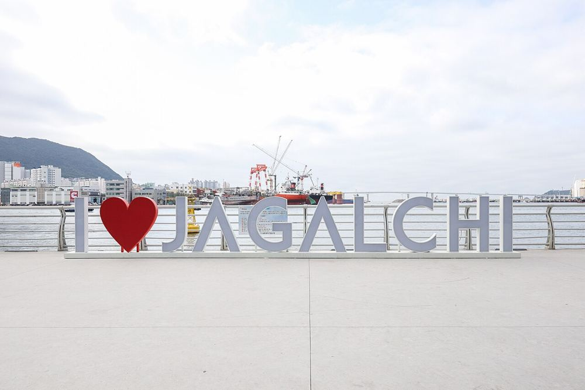
Набережная у рынка
← листай фото →
Что увидишь: самый большой рыбный рынок Бусана. На первом этаже ряды с живой рыбой, крабами и ракушками. На втором этаже рыбу, выбранную внизу, режут на сашими (회) и варят острый суп 매운탕.
Сегодня 05:00-22:00 (Kakao, 07.10). Если сегодня не успеешь, он стоит и на пятницу утром.
🚕 Jagalchi → отель: 3,2 км, 11 мин, ~5 800 ₩. Таксисту: 부산 서구 송도해변로 113
5
Songdo Cloud Trail
송도구름산책로 · вечер у отеля
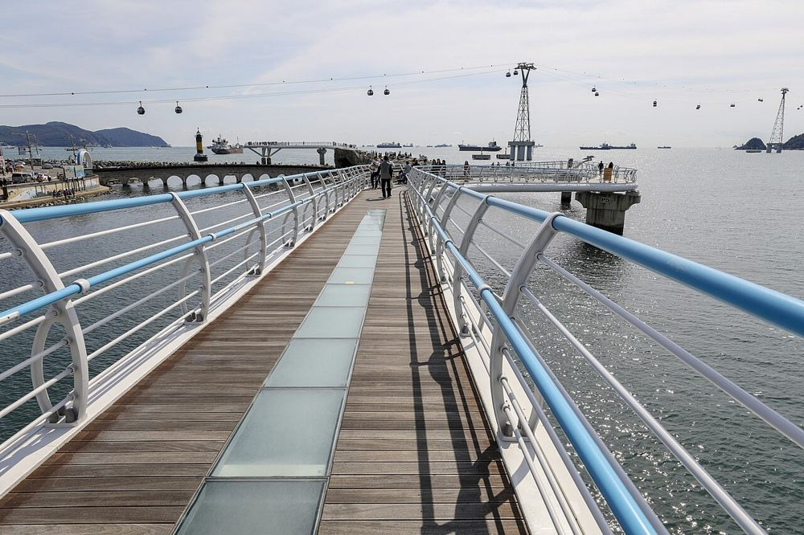
Стеклянные полосы в полу
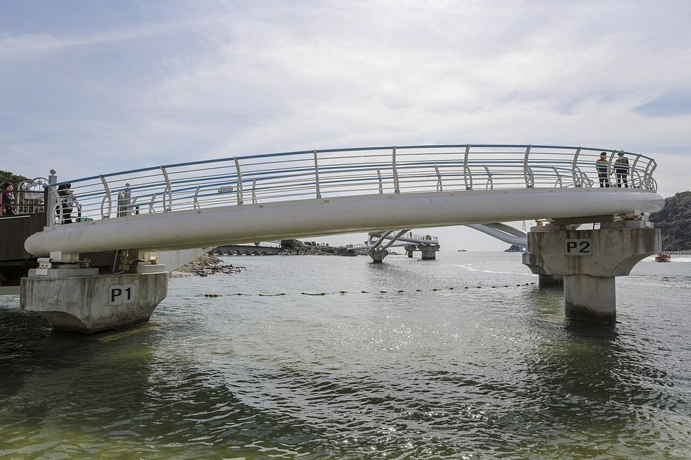
Круглая смотровая на конце
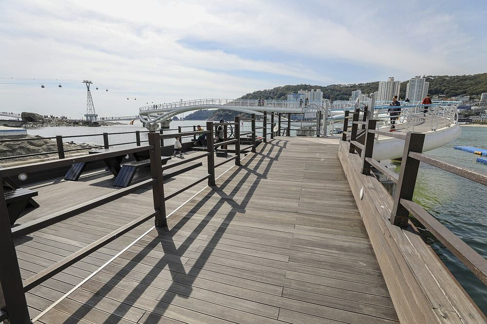
Деревянный настил над водой
← листай фото →
Что увидишь: мост-дорожка 365 м над морем от пляжа Songdo до маленького скалистого островка. В полу полосы стекла и решётки, под ногами волны, над головой кабинки канатки, на конце круглая смотровая. Это прогулка на 20-30 минут, а не отдельная достопримечательность.
06:00-23:00, бесплатно, подсветка примерно 20:00-23:00. От отеля ~8 минут пешком (580 м).
План на четверг: утро и день - работа. ~13:30 такси → Taejongdae 14:00-16:30 → такси 32 мин → остров Dongbaek, закат 17:59 с маяка → ужин в Marine City или суши в Millak (оба до 21:00) → мост Gwangan в подсветке → домой. Около 16:00 должен прийти посадочный на KE2131. На сам пляж Haeundae не идёшь: Dongbaek - мыс на его другом, западном конце, ты был на восточном.
🚕 Отель → вход в Taejongdae: 9 км, 19 мин, ~10 100 ₩. Таксисту: 태종대 다누비열차 (вход и остановка шаттла)
1
Taejongdae
태종대 · обрывы
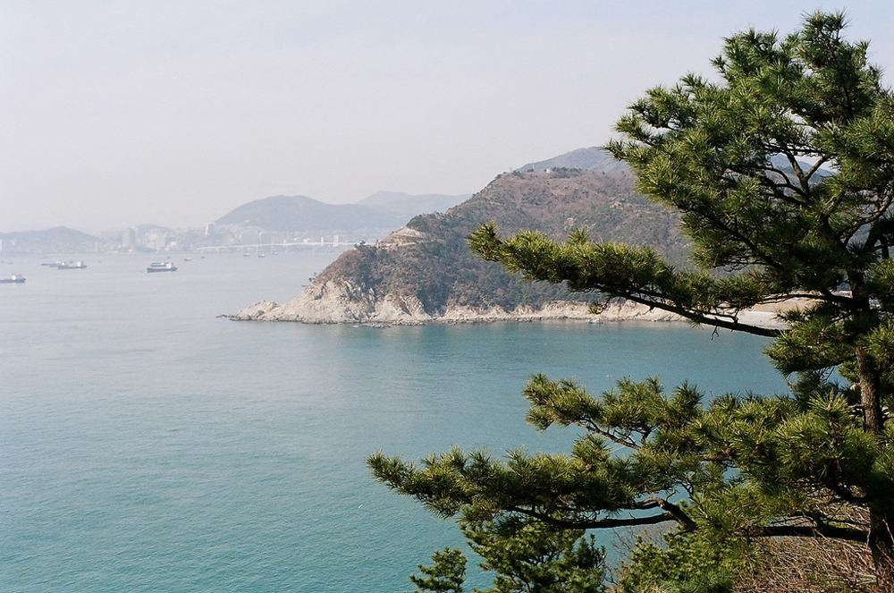
Обрывы и сосны над морем
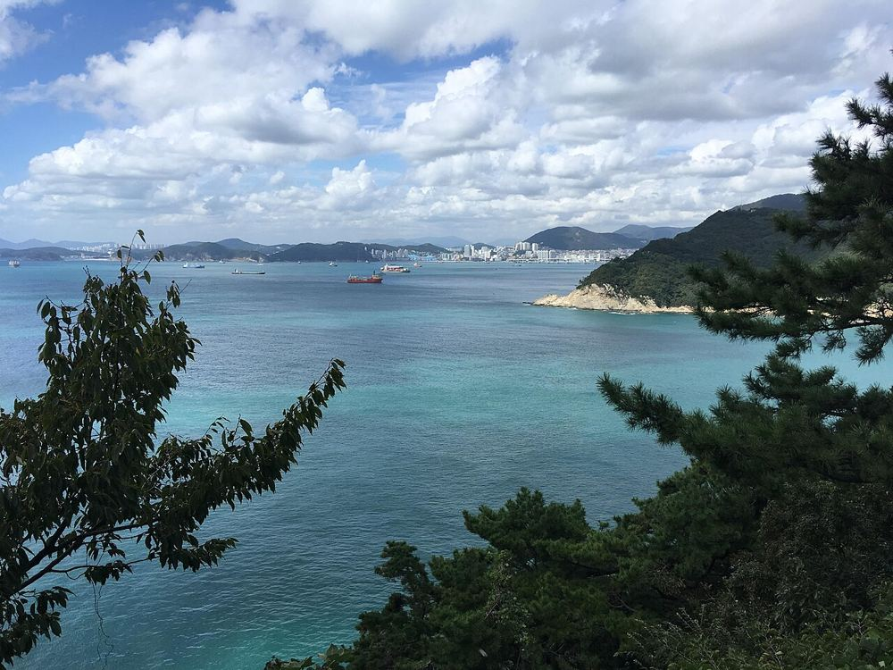
Вид с мыса на море и острова
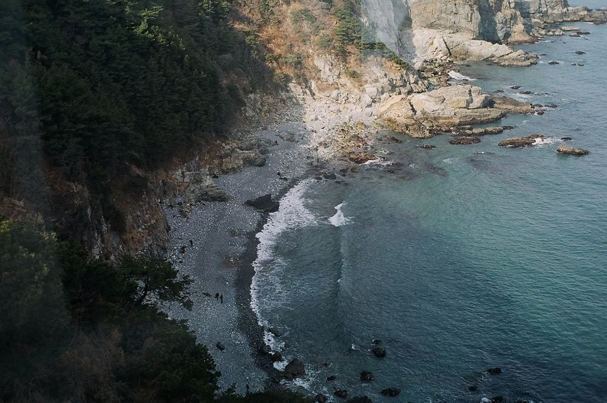
Скальный берегГалечный берег под скалами
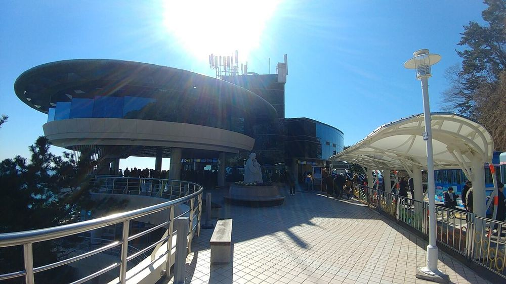
Смотровая площадка
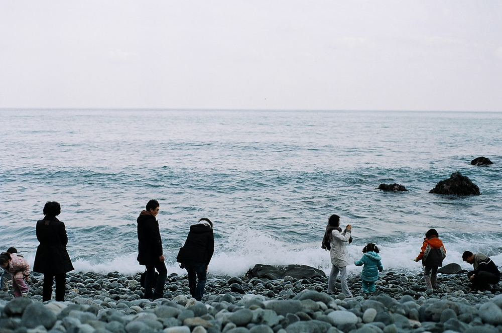
У воды на гальке
← листай фото →
Что увидишь: мыс на краю острова Yeongdo: скалистые обрывы над открытым морем, сосновый лес, галечный берег под скалами, смотровая площадка и маяк. Внутри парка асфальтовая дорога-петля через лес.
Парк 04:00-24:00, берег закрывают 21:00-05:00 (Kakao). Прогулочный поезд Danubi не ходит с 03.07.2026, вместо него бесплатный шаттл, Kakao показывает 09:20-17:30 - на месте сверь. От входа до смотровой пешком 1,7 км, ~23 мин. Нужно около 2 часов.
Тропа вдоль моря через сосныПодвесной мост над скаламиСкалы и вид на пляж HaeundaeМаяк на краю островаNurimaru APEC HouseЗакат с маяка: мост Gwangan
← листай фото →
Что увидишь: лесистый мыс на западном конце пляжа Haeundae. Вокруг идёт прибрежная тропа ~950 м через сосны прямо над скалами: подвесной мост, маяк на краю, статуя русалки, Nurimaru APEC House. С маяка солнце садится за мост Gwangan.
Тропа открыта круглосуточно, на круг ~1 час. Nurimaru внутрь 09:00-17:00 (Kakao).
🚕 Gwangalli → отель: 15 км, 23 мин, ~15 000 ₩ + 1 400 ₩. Таксисту: 부산 서구 송도해변로 113
Пт 09.10 · вылет
Если не был на Jagalchi в среду: утром завтрак там (отель → рынок 10 мин, ~6 400 ₩, открыт с 05:00). Выезд из отеля до 11:00.13:00-13:15 такси в аэропорт Gimhae (국제선): 19 км, ~39 мин, ~18 600 ₩. Рейс KE2131 в 16:00.